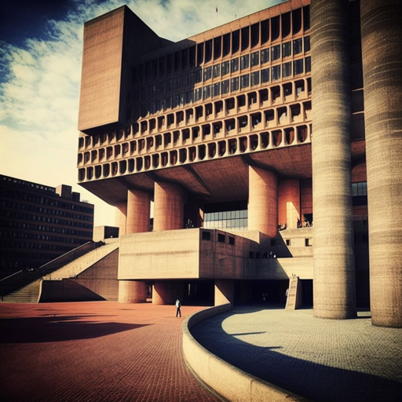
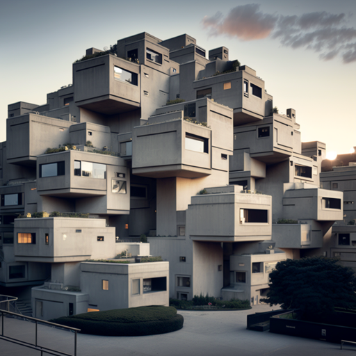
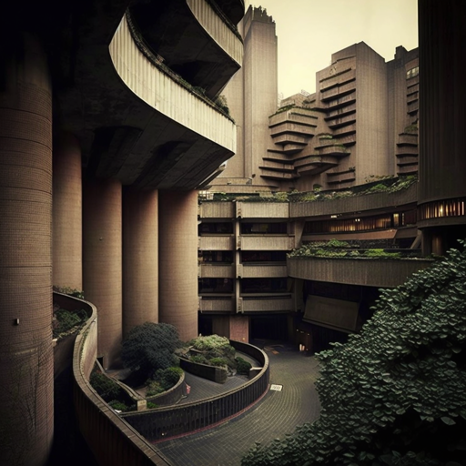
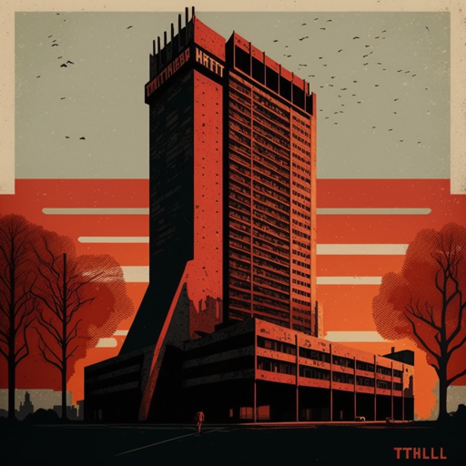

The National Theatre, London - Designed by architect Denys Lasdun and completed in 1976, the National Theatre is an iconic example of brutalist architecture. Its distinctive concrete structure, with its sharp angles and geometric forms, has made it a beloved landmark in London. The National Theatre's design was influenced by the architecture of ancient Greece and Rome, and its exposed concrete surfaces were intended to evoke a sense of monumentality and permanence.
Boston City Hall, Boston - Designed by architects Gerhard Kallmann and Michael McKinnell and completed in 1968, Boston City Hall is a controversial example of brutalist architecture. Its imposing concrete structure, with its massive inverted pyramid and stark, unadorned surfaces, has been criticized for its harsh, austere appearance. However, Boston City Hall's design has also been praised for its bold, uncompromising character and its successful integration with its surrounding urban context.
Habitat 67, Montreal - Designed by architect Moshe Safdie and completed in 1967, Habitat 67 is a pioneering example of brutalist architecture. Its innovative design, which consists of a series of prefabricated concrete modules stacked together to form a housing complex, has made it an icon of modernist architecture. Habitat 67 was originally built as a pavilion for the 1967 World Expo in Montreal, but it has since been transformed into a thriving residential community.
The Barbican Centre, London - Designed by architects Chamberlin, Powell and Bon and completed in 1982, the Barbican Centre is a massive complex of buildings in central London. Its distinctive brutalist style, with its raw concrete surfaces and imposing scale, has made it a divisive landmark in the city. The Barbican Centre is home to a range of cultural institutions, including a concert hall, art galleries, cinemas, and a performing arts center, and it has become a hub for creative activity in London.
The Trellick Tower, London - Designed by architect Ernő Goldfinger and completed in 1972, the Trellick Tower is a towering example of brutalist architecture. Its 31-story concrete structure, with its distinctive cruciform shape and distinctive patterned façade, has made it a striking presence on the London skyline. The Trellick Tower was originally designed as social housing, but it has since become a sought-after address for those looking to live in a unique and iconic building.